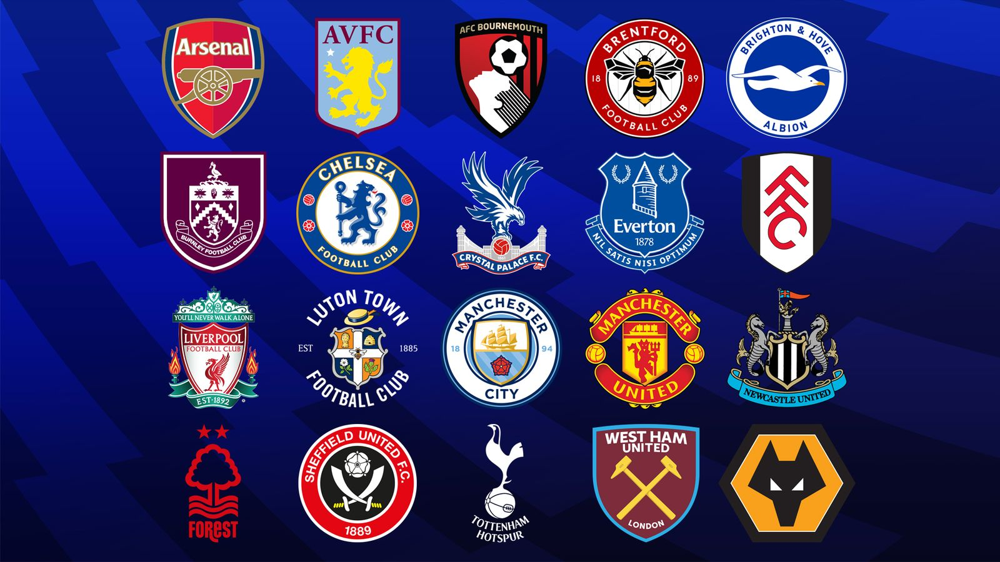

Hi my name is Nico and I love to play soccer. I have played for many years and now have created this website that is all about it. In this website you will find tons of information on english soccer
The English football league system, also known as the football pyramid, is a series of interconnected leagues for men's association football clubs in England, with five teams from Wales, one from Guernsey, one from Jersey and one from the Isle of Man also competing. The system has a hierarchical format with promotion and relegation between leagues at different levels, allowing even the smallest club the theoretical possibility of ultimately rising to the very top of the system, the Premier League.
